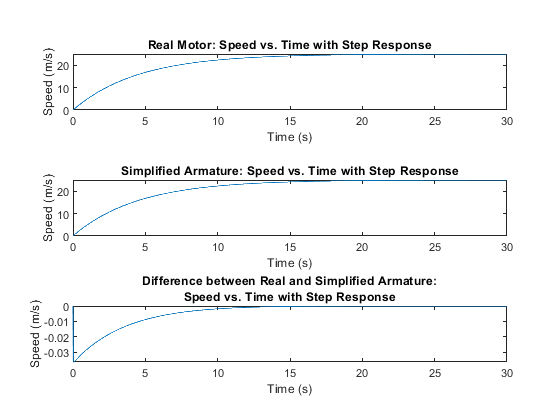
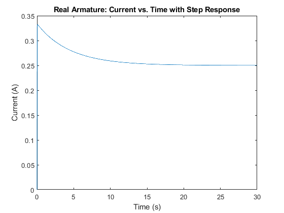
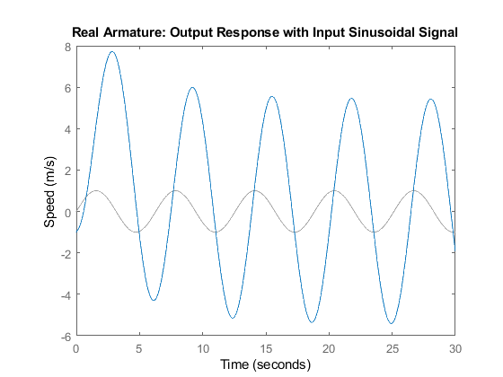

La = 0.02;
Ra = 3;
Ke =0.01;
Kt = 0.01;
I = 6*10^-4;
b = 10^-4;
A = [0 1 0; 0 (-b/I) (Kt/I); 0 (-Ke/La) (-Ra/La)];
B = [0; 0; (1/La)];
C = [0 1 0];
for x = 1:10
disp(x)
end
D = 0;
A1 = [0 1; 0 -(b + (Ke*Kt)/Ra)/I];
B1 = [0; (Kt/(Ra*I))];
C1 = [0 1];
D1 = 0;
motor = ss(A,B,C,D);
motor_simplified = ss(A1,B1,C1,D1);
G_motor = tf(motor);
G_motor_simplified = tf(motor_simplified);
zpk_motor = zpk(motor);
[zeros, poles, gain] = zpkdata(G_motor);
poles = cell2mat(poles);
[num, den] = tfdata(G_motor);
num = cell2mat(num);
den = cell2mat(den);
[num1, den1] = tfdata(G_motor_simplified);
num1 = cell2mat(num1);
den1 = cell2mat(den1);
G_motor
G_motor_simplified
zpk_motor
poles
num
den
num1
den1
T = linspace(0,30,1000);
subplot(3,1,1);
Y1 = step(motor, T);
plot(T,Y1)
title('Real Motor: Speed vs. Time with Step Response')
xlabel('Time (s)')
ylabel('Speed (m/s)')
approx = Y1(1000)
subplot(3,1,2);
Y2 = step(motor_simplified, T);
plot(T,Y2);
title('Simplified Armature: Speed vs. Time with Step Response')
xlabel('Time (s)')
ylabel('Speed (m/s)')
subplot(3,1,3);
plot(T,Y1-Y2);
title({'Difference between Real and Simplified Armature:','Speed vs. Time with Step Response'})
xlabel('Time (s)')
ylabel('Speed (m/s)')
error = abs(min(Y1-Y2))
figure();
syms s;
TAV = limit(833.3/(s^2+150.2*s+33.33));
TAV
C_current = [0 0 1];
motor_armature_current = ss(A,B,C_current,D);
Y3 = step(motor_armature_current, T);
plot(T,Y3);
title('Real Armature: Current vs. Time with Step Response')
xlabel('Time (s)')
ylabel('Current (A)')
figure();
X0 = [0;-1;.5];
lsim(motor,sin(T),T,X0);
title('Real Armature: Output Response with Input Sinusoidal Signal')
ylabel('Speed (m/s)')
y = lsim(motor,sin(T),T,X0);
amp1 = rms(y)*(sqrt(2));
amp1
s = 1i;
motor_at_i = evalfr(G_motor,s);
motor_at_i
theoretical_Amp = abs(motor_at_i);
theoretical_Amp
G_motor =
833.3
---------------------
s^2 + 150.2 s + 33.33
Continuous-time transfer function.
G_motor_simplified =
5.556
----------
s + 0.2222
Continuous-time transfer function.
zpk_motor =
833.33
--------------------
(s+0.2223) (s+149.9)
Continuous-time zero/pole/gain model.
poles =
-149.9444
-0.2223
num =
0 0 833.3333
den =
1.0000 150.1667 33.3333
num1 =
0 5.5556
den1 =
1.0000 0.2222
approx =
24.9682
error =
0.0365
TAV =
83330/3333
amp1 =
5.6304
motor_at_i =
1.1419 - 5.3035i
theoretical_Amp =
5.4251
  